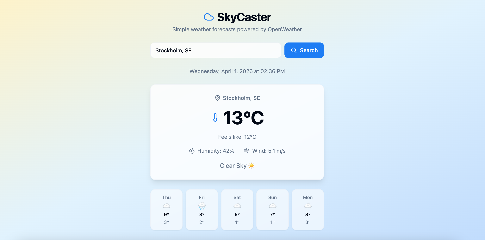
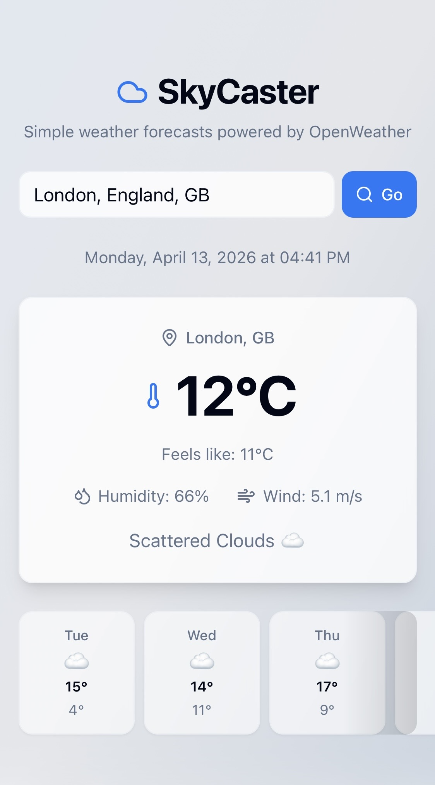

Developed and iteratively improved a weather application during my internship (APL), using a GenAI-assisted workflow.
I focused on usability and clarity, testing interactions and refining the interface based on how users interact with the app.
Worked with API data to display real-time weather information, making continuous, targeted adjustments to enhance the experience.
I continue to refine the application by identifying small changes that improve the overall user experience.


This project strengthened my ability to improve a product through iterative changes, focusing on usability, clarity, and user feedback.
It showed how testing interactions and making small adjustments can significantly improve the overall user experience.